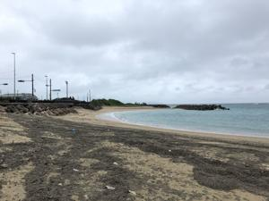
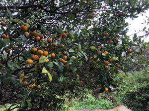
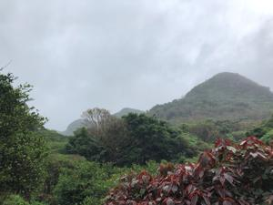

うるがいの話 ある日
最新: シーカーサー【うるがいの話 ある日】とは 一日だけのプログです
『うるがいの話』の最新一日だけのプログで、通信料が少なく経済的だ。カニの画像をクリックすると全ての日付が載る『うるがいの話』サイトを表示します
|
|
【うるがいの話】 うるがい(ｳﾙｶﾞｲ urugai)とは、『もずくがに』の名前でとても大きくなります。 |
|---|---|
|
|
【カミマヤーの話】 猫のことを方言でマヤーといいます。カミマヤー（kamimayaa）とは、神の猫のことです。 |
|
【タナガーの話】 たながー（ﾀﾅｶﾞｰtanagaa）とは手長えびのことで、何種類かあり大きいのは車 エビぐらいになります。 |

|
【ぶながぁの話】 ぶながー(bunagaa)とは、赤い髪の毛、赤い身体、そして身長は１ｍ２０ｃｍ ぐらい、川の蟹を食べているの目撃された。場所は沖縄県国頭郡大宜味村のと ある村僕の隣近所に住んでいる爺さんから、聞いた話です。 |
|
|
【ギーマの話】 ギーマ(giima)とは、山原の里山に咲くスズランに似た、 花を付けます。実は食べられます、 気が付くと口の周りが紫になっています。 |
2021年12月26日 (日）シーカーサー
17:31


朝、いつものように洗濯し終えた洗濯物を取ろうとすると、ドラム中心部にあ
るカバーのすき間に『ランニング用のパーカーの紐』が入り、パカーがとれな
い。おぇ！、２度目だ。数か月まえは、『ランニングパンツの紐』が同じよう
に挟まっていた。前回は、比較的簡単に外せたが今回はなかなか取れなかった
ハサミで紐を切ろうとしたが、ゴソゴソしていたヨメが取れたと行った。フー
ン、さすが理系、解くのはうまい。ま、それはそうとして、洗濯機はどうしよ
う、そろそろ買い替えか、とりえず修理をお願いしようか・・・、ネットで調
べるとメーカーのサイトに『ドラム中心部にあるカバーのすき間に物が入り、
挟まってしまう場合があります。』、ホーそうなんだ。ま、挟まった物が取れ
ばいいのかな、と恐らく劣化も原因だと思うが次からは、紐が有るものはネッ
トに入れる事にする。 
ところで、大宜味村の特産としてヒラミレモンがある。地元ではシーカーサー
（世間ではシークヮーサーが一般的かな）とよんでいるが、 私が小さい頃、
まだ、オレンジが簡単に手にはいらなかった、もちろん、みかんも。シーカー
サーはミカンでない。正月になると山から、袋（５ｋｇの米袋くらい）の一杯
、ひたすらそれを食べて いた。とても、スッパクて（もちろん中には甘いも
のもあったが）。いま考えるととてもヘルシー。 

そうそう、この前山原で撮った本場大宜味村のシークヮーサー、正月前の冬休
みに山へ取りに行くのが行事だった。こぶのような山には、洞窟がありそこに
は水晶が採れたと聞いたが、友達といった時は見つけることは出来なかった。
ヒメハブが５，６匹固まっているのを見ただけだった、写真では舗装された道
路があるが、その昔は当然ナイス。いつのまにかそこは今年『世界自然遺産』
になってしまった。では、正月前の行事である門松にする松を取ってはいけな
いのか、・・・複雑な思いがした。道路には、動植物を採集してはダメと看板
があった。
１７時２５分 ビットコインの総資産 ￥１６、６００